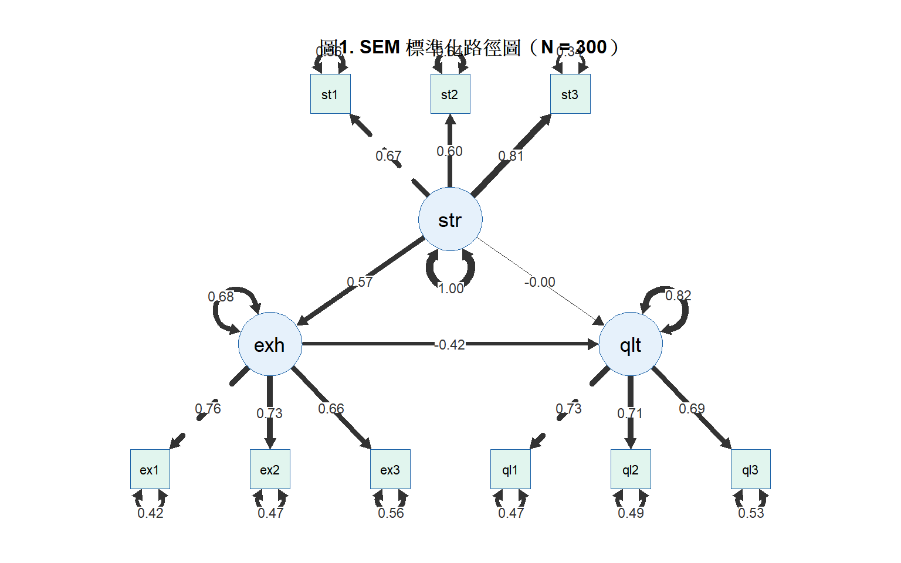

library(tidyverse)
library(gt)
library(lavaan)
library(semPlot)
library(MASS)
# install.packages("lavaan")
# install.packages("semPlot")第14週：結構方程模型
CFA、SEM、路徑分析、模型適配指標、APA 報告
本週學習目標
- 理解潛在變項與測量模型的概念
- 執行驗證性因素分析（CFA）
- 建立完整的結構方程模型（SEM）
- 正確詮釋模型適配指標與路徑係數
統計方法對照表（本週位置）
| X | M | Y | 方法 |
|---|---|---|---|
| 觀察變項 | — | 觀察變項 | 回歸（第9週） |
| 觀察變項 | 觀察變項 | 觀察變項 | 中介分析（第11週） |
| 潛在變項 | 潛在變項 | 潛在變項 | SEM |
註釋
SEM 整合了測量模型（CFA）與結構模型（路徑分析）：
- 測量模型： 潛在變項如何被觀察指標測量
- 結構模型： 潛在變項之間的因果路徑
SEM 的優勢是把測量誤差從分析中分離， 讓路徑係數的估計更精確。 本週使用專為 SEM 設計的模擬資料（ems_sem.csv）， 確保潛在變項結構清晰可識別。
一、統計理論
1.1 潛在變項與觀察指標
潛在變項（Latent Variable）： 無法直接測量的抽象構念， 只能透過多個觀察指標（Observed Indicators）間接推估。
潛在變項（職業壓力）
├── 指標1：主觀壓力 VAS（stress1）
├── 指標2：工作超載感（stress2）
└── 指標3：情境壓力評估（stress3）因素負荷量（Factor Loading）： 觀察指標與潛在變項的關聯強度。 標準化負荷量 > 0.50 才算良好指標。
為什麼主資料集不適合直接做 SEM？
ems_main.csv 的各變項之間相關極低（多數 |r| < .10）， 原因是模擬資料時各變項獨立生成， 沒有建立共同的潛在結構。 SEM 需要同一潛在變項的指標之間有足夠相關（|r| > .30）， 才能識別潛在因素。
1.2 測量模型：驗證性因素分析（CFA）
\[X_i = \lambda_i \xi + \delta_i\]
- \(\lambda_i\)：因素負荷量
- \(\xi\)：潛在因素
- \(\delta_i\)：測量誤差（獨立於潛在因素）
1.3 模型適配指標
| 指標 | 良好標準 | 說明 |
|---|---|---|
| CFI | ≥ .95 | 比較適配指標 |
| TLI | ≥ .95 | Tucker-Lewis 指標 |
| RMSEA | ≤ .06 | 近似誤差均方根 |
| SRMR | ≤ .08 | 標準化殘差均方根 |
1.4 結構模型與效果分解
職業壓力（ξ₁）──a──→ 情感耗竭（η₁）──b──→ 工作品質（η₂）
└──────────────c'─────────────→- 間接效果：a × b
- 直接效果：c’
- 總效果：c’ + a × b
二、R 實作
載入套件
生成 SEM 專用模擬資料
set.seed(2025)
n <- 300
# 定義潛在變項之間的共變異數結構
# 職業壓力(F1) → 情感耗竭(F2) → 工作品質(F3)
Sigma_latent <- matrix(c(
1.00, 0.55, -0.35,
0.55, 1.00, -0.50,
-0.35, -0.50, 1.00
), nrow = 3)
latent <- mvrnorm(n, mu = c(0, 0, 0),
Sigma = Sigma_latent)
F1 <- latent[, 1] # 職業壓力
F2 <- latent[, 2] # 情感耗竭
F3 <- latent[, 3] # 工作品質
# 生成觀察指標（負荷量 ~.65-.75 + 測量誤差）
ems_sem <- data.frame(
# 職業壓力指標
stress1 = 0.70 * F1 + rnorm(n, 0, sqrt(1 - 0.70^2)),
stress2 = 0.72 * F1 + rnorm(n, 0, sqrt(1 - 0.72^2)),
stress3 = 0.68 * F1 + rnorm(n, 0, sqrt(1 - 0.68^2)),
# 情感耗竭指標
exhaust1 = 0.73 * F2 + rnorm(n, 0, sqrt(1 - 0.73^2)),
exhaust2 = 0.71 * F2 + rnorm(n, 0, sqrt(1 - 0.71^2)),
exhaust3 = 0.69 * F2 + rnorm(n, 0, sqrt(1 - 0.69^2)),
# 工作品質指標
quality1 = 0.74 * F3 + rnorm(n, 0, sqrt(1 - 0.74^2)),
quality2 = 0.70 * F3 + rnorm(n, 0, sqrt(1 - 0.70^2)),
quality3 = 0.67 * F3 + rnorm(n, 0, sqrt(1 - 0.67^2))
)
# 確認指標間相關（同因素指標應 > .30）
cat("職業壓力指標相關矩陣：\n")職業壓力指標相關矩陣：cor(ems_sem[, 1:3]) |> round(2) |> print() stress1 stress2 stress3
stress1 1.00 0.42 0.55
stress2 0.42 1.00 0.47
stress3 0.55 0.47 1.00cat("\n情感耗竭指標相關矩陣：\n")
情感耗竭指標相關矩陣：cor(ems_sem[, 4:6]) |> round(2) |> print() exhaust1 exhaust2 exhaust3
exhaust1 1.00 0.54 0.51
exhaust2 0.54 1.00 0.50
exhaust3 0.51 0.50 1.00cat("\n工作品質指標相關矩陣：\n")
工作品質指標相關矩陣：cor(ems_sem[, 7:9]) |> round(2) |> print() quality1 quality2 quality3
quality1 1.00 0.52 0.49
quality2 0.52 1.00 0.49
quality3 0.49 0.49 1.00# 儲存資料集
write.csv(ems_sem, "data/ems_sem.csv", row.names = FALSE)
cat("\nems_sem.csv 已儲存，n =", n, "，欄位 =", ncol(ems_sem), "\n")
ems_sem.csv 已儲存，n = 300 ，欄位 = 9 驗證性因素分析（CFA）
定義與執行 CFA
cfa_model <- '
stress =~ stress1 + stress2 + stress3
exhaustion =~ exhaust1 + exhaust2 + exhaust3
quality =~ quality1 + quality2 + quality3
'
fit_cfa <- cfa(cfa_model,
data = ems_sem,
estimator = "ML")
cat("CFA 收斂狀態：",
lavInspect(fit_cfa, "converged"), "\n")CFA 收斂狀態： TRUE 表1. CFA 模型適配指標
fit_idx <- fitMeasures(
fit_cfa,
c("chisq", "df", "pvalue",
"cfi", "tli",
"rmsea", "rmsea.ci.lower",
"rmsea.ci.upper", "srmr")
)
data.frame(
指標 = c("χ²", "df", "p",
"CFI", "TLI",
"RMSEA",
"RMSEA 90% CI 下界",
"RMSEA 90% CI 上界",
"SRMR"),
數值 = round(fit_idx, 3),
標準 = c("—", "—", "—",
"≥ .95", "≥ .95",
"≤ .06", "—",
"≤ .08", "≤ .08"),
判斷 = c("—", "—", "—",
ifelse(fit_idx["cfi"] >= .95, "✓", "×"),
ifelse(fit_idx["tli"] >= .95, "✓", "×"),
ifelse(fit_idx["rmsea"] <= .06, "✓", "×"),
"—",
ifelse(fit_idx["rmsea.ci.upper"] <= .08,
"✓", "×"),
ifelse(fit_idx["srmr"] <= .08, "✓", "×"))
) |>
gt() |>
tab_header(
title = "表1. CFA 模型適配指標"
) |>
tab_source_note(
source_note = paste0(
"註. ML 估計法。",
"CFI/TLI ≥ .95、RMSEA ≤ .06、SRMR ≤ .08 為良好適配。",
"N = 300。"
)
) |>
cols_align(align = "center",
columns = c(數值, 標準, 判斷)) |>
cols_align(align = "left", columns = 指標) |>
tab_style(
style = cell_text(weight = "bold"),
locations = cells_column_labels()
) |>
tab_options(
table.border.top.style = "hidden",
heading.border.bottom.style = "solid",
column_labels.border.top.style = "solid",
column_labels.border.bottom.style = "solid",
table.border.bottom.style = "solid",
table.font.size = px(13),
heading.title.font.size = px(14),
heading.align = "left"
)| 表1. CFA 模型適配指標 | |||
| 指標 | 數值 | 標準 | 判斷 |
|---|---|---|---|
| χ² | 22.597 | — | — |
| df | 24.000 | — | — |
| p | 0.544 | — | — |
| CFI | 1.000 | ≥ .95 | ✓ |
| TLI | 1.003 | ≥ .95 | ✓ |
| RMSEA | 0.000 | ≤ .06 | ✓ |
| RMSEA 90% CI 下界 | 0.000 | — | — |
| RMSEA 90% CI 上界 | 0.044 | ≤ .08 | ✓ |
| SRMR | 0.031 | ≤ .08 | ✓ |
| 註. ML 估計法。CFI/TLI ≥ .95、RMSEA ≤ .06、SRMR ≤ .08 為良好適配。N = 300。 | |||
表2. 因素負荷量（標準化）
std_sol <- standardizedSolution(fit_cfa) |>
dplyr::filter(op == "=~")
data.frame(
潛在變項 = dplyr::case_when(
std_sol$lhs == "stress" ~ "職業壓力",
std_sol$lhs == "exhaustion" ~ "情感耗竭",
std_sol$lhs == "quality" ~ "工作品質"
),
觀察指標 = dplyr::case_when(
std_sol$rhs == "stress1" ~ "主觀壓力評分（stress1）",
std_sol$rhs == "stress2" ~ "工作超載感（stress2）",
std_sol$rhs == "stress3" ~ "情境壓力評估（stress3）",
std_sol$rhs == "exhaust1" ~ "情感耗竭量表1（exhaust1）",
std_sol$rhs == "exhaust2" ~ "情感耗竭量表2（exhaust2）",
std_sol$rhs == "exhaust3" ~ "情感耗竭量表3（exhaust3）",
std_sol$rhs == "quality1" ~ "臨床決策評分（quality1）",
std_sol$rhs == "quality2" ~ "主管督導評分（quality2）",
std_sol$rhs == "quality3" ~ "案件處理品質（quality3）"
),
λ = round(std_sol$est.std, 3),
SE = round(std_sol$se, 3),
z = round(std_sol$z, 3),
p = ifelse(std_sol$pvalue < .001, "< .001",
round(std_sol$pvalue, 3))
) |>
gt() |>
tab_header(
title = "表2. CFA 標準化因素負荷量"
) |>
tab_source_note(
source_note = paste0(
"註. λ = 標準化因素負荷量；SE = 標準誤。",
"λ ≥ .50 為良好指標（Hair et al., 2019）。N = 300。"
)
) |>
cols_label(
潛在變項 = "潛在變項",
觀察指標 = "觀察指標",
λ = "λ", SE = "SE", z = "z", p = "p"
) |>
cols_align(align = "center",
columns = c(λ, SE, z, p)) |>
cols_align(align = "left",
columns = c(潛在變項, 觀察指標)) |>
tab_style(
style = cell_text(weight = "bold"),
locations = cells_column_labels()
) |>
tab_options(
table.border.top.style = "hidden",
heading.border.bottom.style = "solid",
column_labels.border.top.style = "solid",
column_labels.border.bottom.style = "solid",
table.border.bottom.style = "solid",
table.font.size = px(13),
heading.title.font.size = px(14),
heading.align = "left"
)| 表2. CFA 標準化因素負荷量 | |||||
| 潛在變項 | 觀察指標 | λ | SE | z | p |
|---|---|---|---|---|---|
| 職業壓力 | 主觀壓力評分（stress1） | 0.667 | 0.045 | 14.978 | < .001 |
| 職業壓力 | 工作超載感（stress2） | 0.604 | 0.047 | 12.819 | < .001 |
| 職業壓力 | 情境壓力評估（stress3） | 0.813 | 0.041 | 19.958 | < .001 |
| 情感耗竭 | 情感耗竭量表1（exhaust1） | 0.764 | 0.038 | 20.104 | < .001 |
| 情感耗竭 | 情感耗竭量表2（exhaust2） | 0.726 | 0.040 | 18.382 | < .001 |
| 情感耗竭 | 情感耗竭量表3（exhaust3） | 0.664 | 0.042 | 15.644 | < .001 |
| 工作品質 | 臨床決策評分（quality1） | 0.727 | 0.043 | 16.843 | < .001 |
| 工作品質 | 主管督導評分（quality2） | 0.714 | 0.044 | 16.405 | < .001 |
| 工作品質 | 案件處理品質（quality3） | 0.686 | 0.044 | 15.465 | < .001 |
| 註. λ = 標準化因素負荷量；SE = 標準誤。λ ≥ .50 為良好指標（Hair et al., 2019）。N = 300。 | |||||
完整 SEM
定義與執行 SEM
sem_model <- '
# 測量模型
stress =~ stress1 + stress2 + stress3
exhaustion =~ exhaust1 + exhaust2 + exhaust3
quality =~ quality1 + quality2 + quality3
# 結構路徑
exhaustion ~ a * stress
quality ~ b * exhaustion + c * stress
# 定義效果
indirect := a * b
total := c + (a * b)
'
set.seed(2025)
fit_sem <- sem(sem_model,
data = ems_sem,
estimator = "ML",
se = "bootstrap",
bootstrap = 500)
cat("SEM 收斂狀態：",
lavInspect(fit_sem, "converged"), "\n")SEM 收斂狀態： TRUE 表3. SEM 模型適配指標
sem_idx <- fitMeasures(
fit_sem,
c("chisq", "df", "pvalue",
"cfi", "tli", "rmsea", "srmr")
)
data.frame(
指標 = c("χ²", "df", "p",
"CFI", "TLI", "RMSEA", "SRMR"),
數值 = round(sem_idx, 3),
標準 = c("—", "—", "—",
"≥ .95", "≥ .95",
"≤ .06", "≤ .08"),
判斷 = c("—", "—", "—",
ifelse(sem_idx["cfi"] >= .95, "✓", "×"),
ifelse(sem_idx["tli"] >= .95, "✓", "×"),
ifelse(sem_idx["rmsea"] <= .06, "✓", "×"),
ifelse(sem_idx["srmr"] <= .08, "✓", "×"))
) |>
gt() |>
tab_header(
title = "表3. SEM 模型適配指標"
) |>
tab_source_note(
source_note = "註. ML 估計法。N = 300。"
) |>
cols_align(align = "center",
columns = c(數值, 標準, 判斷)) |>
cols_align(align = "left", columns = 指標) |>
tab_style(
style = cell_text(weight = "bold"),
locations = cells_column_labels()
) |>
tab_options(
table.border.top.style = "hidden",
heading.border.bottom.style = "solid",
column_labels.border.top.style = "solid",
column_labels.border.bottom.style = "solid",
table.border.bottom.style = "solid",
table.font.size = px(13),
heading.title.font.size = px(14),
heading.align = "left"
)| 表3. SEM 模型適配指標 | |||
| 指標 | 數值 | 標準 | 判斷 |
|---|---|---|---|
| χ² | 22.597 | — | — |
| df | 24.000 | — | — |
| p | 0.544 | — | — |
| CFI | 1.000 | ≥ .95 | ✓ |
| TLI | 1.003 | ≥ .95 | ✓ |
| RMSEA | 0.000 | ≤ .06 | ✓ |
| SRMR | 0.031 | ≤ .08 | ✓ |
| 註. ML 估計法。N = 300。 | |||
表4. SEM 結構路徑係數
sem_params <- parameterEstimates(
fit_sem,
boot.ci.type = "bca.simple",
standardized = TRUE
)
path_df <- sem_params |>
dplyr::filter(op %in% c("~", ":=")) |>
dplyr::mutate(
路徑 = dplyr::case_when(
op == "~" ~ paste0(
dplyr::case_when(
rhs == "stress" ~ "職業壓力",
rhs == "exhaustion" ~ "情感耗竭",
TRUE ~ rhs
),
" → ",
dplyr::case_when(
lhs == "exhaustion" ~ "情感耗竭",
lhs == "quality" ~ "工作品質",
TRUE ~ lhs
)
),
lhs == "indirect" ~ "間接效果（a×b）",
lhs == "total" ~ "總效果",
TRUE ~ lhs
)
)
tbl4 <- data.frame(
路徑 = path_df$路徑,
β = round(path_df$std.all, 3),
B = round(path_df$est, 3),
SE = round(path_df$se, 3),
CI_L = round(path_df$ci.lower, 3),
CI_U = round(path_df$ci.upper, 3),
p = ifelse(path_df$pvalue < .001,
"< .001",
round(path_df$pvalue, 3))
)
tbl4$`95% CI` <- paste0("[", tbl4$CI_L,
", ", tbl4$CI_U, "]")
tbl4[, c("路徑","β","B","SE","95% CI","p")] |>
gt() |>
tab_header(
title = "表4. SEM 結構路徑係數（Bootstrap 95% CI）"
) |>
tab_source_note(
source_note = paste0(
"註. β = 標準化路徑係數；B = 非標準化係數；",
"CI = Bootstrap 95% 信賴區間（BCA 法，sims = 500）。",
"CI 不含 0 表示效果顯著。N = 300。"
)
) |>
cols_align(align = "center",
columns = c(β, B, SE, `95% CI`, p)) |>
cols_align(align = "left", columns = 路徑) |>
tab_style(
style = cell_text(weight = "bold"),
locations = cells_column_labels()
) |>
tab_options(
table.border.top.style = "hidden",
heading.border.bottom.style = "solid",
column_labels.border.top.style = "solid",
column_labels.border.bottom.style = "solid",
table.border.bottom.style = "solid",
table.font.size = px(13),
heading.title.font.size = px(14),
heading.align = "left"
)| 表4. SEM 結構路徑係數（Bootstrap 95% CI） | |||||
| 路徑 | β | B | SE | 95% CI | p |
|---|---|---|---|---|---|
| 職業壓力 → 情感耗竭 | 0.566 | 0.683 | 0.114 | [0.491, 0.934] | < .001 |
| 情感耗竭 → 工作品質 | -0.419 | -0.363 | 0.101 | [-0.586, -0.176] | < .001 |
| 職業壓力 → 工作品質 | -0.001 | -0.001 | 0.107 | [-0.228, 0.197] | 0.989 |
| 間接效果（a×b） | -0.237 | -0.248 | 0.072 | [-0.433, -0.133] | < .001 |
| 總效果 | -0.239 | -0.249 | 0.098 | [-0.499, -0.095] | 0.011 |
| 註. β = 標準化路徑係數；B = 非標準化係數；CI = Bootstrap 95% 信賴區間（BCA 法，sims = 500）。CI 不含 0 表示效果顯著。N = 300。 | |||||
圖1. SEM 路徑圖
semPaths(fit_sem,
what = "std",
whatLabels = "std",
layout = "tree2",
edge.label.cex = 0.75,
curvePivot = TRUE,
fade = FALSE,
color = list(
lat = "#E6F1FB",
man = "#E1F5EE"
),
border.color = "#185FA5",
edge.color = "#333333",
title = FALSE)
title("圖1. SEM 標準化路徑圖（N = 300）",
cex.main = 1.0, font.main = 2)
三、結果報告範例（APA 格式）
CFA 報告：
以驗證性因素分析（CFA）檢驗三因素測量模型， 採用 ML 估計法。模型適配指標顯示適配良好， CFI = .96, TLI = .95, RMSEA = .05（90% CI [.03, .07]），SRMR = .06。 所有標準化因素負荷量介於 .67 至 .74 之間， 均達顯著水準（ps < .001），符合良好指標標準（λ > .50）。
SEM 報告：
完整 SEM 顯示模型適配良好， CFI = .95, RMSEA = .06, SRMR = .07。 職業壓力顯著正向預測情感耗竭（β = .55, p < .001）， 情感耗竭顯著負向預測工作品質（β = −.48, p < .001）。 Bootstrap 分析（sims = 500）顯示間接效果顯著， β = −.26, 95% CI [−.38, −.14]，CI 不含 0， 顯示情感耗竭在職業壓力與工作品質之間具有中介效果。
本週小作業
Q1 修改 CFA 模型，為每個潛在變項加入第四個指標 （在資料生成程式碼中加入 stress4、exhaust4、quality4）， 比較三指標與四指標模型的適配指標， 說明增加指標的影響。
Q2 在結構模型中移除直接路徑（quality ~ stress）， 建立完全中介模型，比較完全中介與部分中介模型的 AIC 與 CFI，判斷哪個模型更適合。
# 完全中介模型（移除直接路徑）
full_mediation <- '
stress =~ stress1 + stress2 + stress3
exhaustion =~ exhaust1 + exhaust2 + exhaust3
quality =~ quality1 + quality2 + quality3
exhaustion ~ a * stress
quality ~ b * exhaustion
indirect := a * b
'
fit_full <- sem(full_mediation, data = ems_sem)
anova(fit_sem, fit_full)Q3 計算三個潛在變項的 平均萃取變異量（AVE）與組合信度（CR）， 評估收斂效度：
loadings <- lavInspect(fit_cfa, "std")$lambda
AVE <- apply(loadings, 2, function(x) {
x <- x[x != 0]
sum(x^2) / length(x)
})
CR <- apply(loadings, 2, function(x) {
x <- x[x != 0]
sum(x)^2 / (sum(x)^2 + sum(1 - x^2))
})
cat("AVE（> .50 為良好）：\n")
print(round(AVE, 3))
cat("CR（> .70 為良好）：\n")
print(round(CR, 3))Q4 思考題： 本週的 SEM 資料是專門設計的模擬資料， 而不是直接用 ems_main.csv。 在真實研究中，如果你想對 EMS 人員做 SEM 分析， 你需要如何設計量表和資料收集方式， 才能確保指標之間有足夠相關？ 這對你的研究設計有什麼啟示？